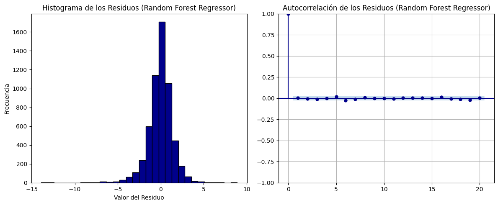
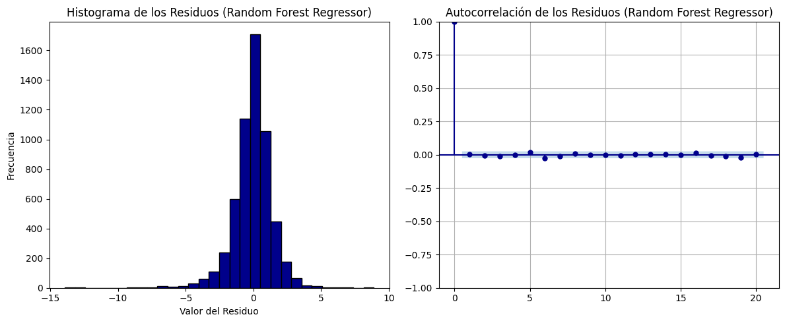

Modelos de regresión#
En esta parte del proyecto, se desarrollan y analizan diversos modelos de regresión con el objetivo de evaluar la influencia de variables meteorológicas —como la dirección del viento, la temperatura, la presión y la humedad— en la velocidad del viento. Para abordar este problema, se han implementado y evaluado diferentes enfoques de aprendizaje automático, comparando su capacidad predictiva y eficiencia en la modelación de las relaciones complejas entre estas variables.
Librerías y modulos necesarios#
import warnings
import numpy as np
import pandas as pd
from sklearn.svm import SVR
import statsmodels.api as sm
import matplotlib.pyplot as plt
from skopt.space import Integer
from skopt import BayesSearchCV
from xgboost import XGBRegressor
warnings.filterwarnings("ignore")
from scipy.stats import jarque_bera
from sklearn.pipeline import Pipeline
from sklearn.linear_model import Ridge, Lasso
from sklearn.tree import DecisionTreeRegressor
from sklearn.linear_model import LinearRegression
from sklearn.neighbors import KNeighborsRegressor
from sklearn.ensemble import RandomForestRegressor
from statsmodels.stats.diagnostic import acorr_ljungbox
from sklearn.model_selection import GridSearchCV, KFold, train_test_split
from sklearn.metrics import r2_score, mean_squared_error, mean_absolute_error
Datos#
Inicialmente importamos el conjunto de datos que utilizaremos para el desarrollo de los modelos.
file_path = r'C:\Users\kamac\OneDrive\Desktop\MachineLearningUN\EDA\ws_modelos.xlsx'
data = pd.read_excel(file_path)
Características principales de la base de datos#
Aquí podemos ver las primeras cinco filas de nuestro dataset, que será utilizado para la construcción de los modelos de regresión lineal.
data.head()
| Fecha | VelViento100m_1 | VelViento100m_2 | VelViento80m_1 | VelViento80m_2 | VelViento60m | DirViento60m | DirViento100m | DirViento80m | Presion | Humedad | Temp100m | Temp21m | |
|---|---|---|---|---|---|---|---|---|---|---|---|---|---|
| 0 | 2022-01-01 00:00:00 | 16.060860 | 15.830104 | 15.145418 | 15.125038 | 14.300989 | 61.98 | 61.08 | 61.21 | 1005.963541 | 75.042725 | 26.922913 | 26.707773 |
| 1 | 2022-01-01 00:10:00 | 16.156927 | 15.972642 | 15.290614 | 15.352352 | 14.533556 | 62.29 | 61.08 | 61.49 | 1005.795867 | 73.509216 | 27.006836 | 26.772633 |
| 2 | 2022-01-01 00:20:00 | 16.473571 | 16.287375 | 15.599149 | 15.562022 | 14.808378 | 61.18 | 60.42 | 60.65 | 1005.739976 | 72.914124 | 26.991577 | 26.772633 |
| 3 | 2022-01-01 00:30:00 | 16.660009 | 16.451707 | 15.801446 | 15.779687 | 15.170287 | 62.20 | 60.88 | 61.19 | 1005.684085 | 73.165894 | 26.877136 | 26.659982 |
| 4 | 2022-01-01 00:40:00 | 16.519613 | 16.353678 | 15.851963 | 15.749131 | 14.927282 | 61.26 | 59.99 | 60.26 | 1005.609563 | 73.791504 | 26.770325 | 26.601949 |
data.tail()
| Fecha | VelViento100m_1 | VelViento100m_2 | VelViento80m_1 | VelViento80m_2 | VelViento60m | DirViento60m | DirViento100m | DirViento80m | Presion | Humedad | Temp100m | Temp21m | |
|---|---|---|---|---|---|---|---|---|---|---|---|---|---|
| 19003 | 2022-05-16 23:10:00 | 5.667995 | 5.628245 | 5.501305 | 5.550207 | 5.388042 | 60.80 | 57.36 | 58.61 | 1007.863847 | 92.353821 | 27.701111 | 27.636290 |
| 19004 | 2022-05-16 23:20:00 | 5.523755 | 5.470902 | 5.401929 | 5.417549 | 5.340636 | 58.95 | 56.91 | 58.10 | 1007.677543 | 92.506409 | 27.662964 | 27.619222 |
| 19005 | 2022-05-16 23:30:00 | 5.627141 | 5.566218 | 5.544223 | 5.575709 | 5.540006 | 58.45 | 55.67 | 56.47 | 1007.547129 | 92.498779 | 27.632446 | 27.591912 |
| 19006 | 2022-05-16 23:40:00 | 5.590224 | 5.554034 | 5.480490 | 5.488771 | 5.404135 | 54.54 | 52.24 | 53.25 | 1007.304934 | 92.544556 | 27.624817 | 27.585085 |
| 19007 | 2022-05-16 23:50:00 | 5.825946 | 5.788715 | 5.683985 | 5.699682 | 5.602768 | 56.87 | 53.48 | 55.07 | 1007.230412 | 92.613220 | 27.609558 | 27.564603 |
data.shape
(19008, 13)
El conjunto de datos cuenta con 13 variables y 19008 observaciones.
data.describe(include = 'number')
| VelViento100m_1 | VelViento100m_2 | VelViento80m_1 | VelViento80m_2 | VelViento60m | DirViento60m | DirViento100m | DirViento80m | Presion | Humedad | Temp100m | Temp21m | |
|---|---|---|---|---|---|---|---|---|---|---|---|---|
| count | 19008.000000 | 19008.000000 | 19008.000000 | 19008.000000 | 19008.000000 | 19008.000000 | 19008.000000 | 19008.000000 | 19008.000000 | 19008.000000 | 19008.000000 | 19008.000000 |
| mean | 12.342915 | 12.208528 | 11.964910 | 11.961529 | 11.636214 | 66.866064 | 65.645194 | 65.904410 | 1006.196902 | 84.469273 | 26.265028 | 26.486346 |
| std | 4.433466 | 4.385033 | 4.268770 | 4.258439 | 4.103487 | 47.736005 | 48.149888 | 47.909614 | 1.823613 | 4.292172 | 0.837681 | 0.946633 |
| min | 0.251334 | 0.225181 | 0.236040 | 0.255526 | 0.292860 | 0.230000 | 0.000000 | 0.030000 | 1001.417712 | 63.072205 | 23.710938 | 22.700129 |
| 25% | 9.837316 | 9.736328 | 9.612626 | 9.624122 | 9.451099 | 48.840000 | 47.840000 | 47.890000 | 1004.901606 | 81.634521 | 25.709839 | 25.820220 |
| 50% | 12.963534 | 12.826116 | 12.574976 | 12.572975 | 12.247453 | 56.420000 | 55.230000 | 55.525000 | 1006.112585 | 84.625244 | 26.060791 | 26.323735 |
| 75% | 15.570065 | 15.395811 | 15.044143 | 15.026889 | 14.568282 | 64.360000 | 62.900000 | 63.312500 | 1007.421374 | 87.646484 | 26.571960 | 26.984280 |
| max | 22.301553 | 22.027242 | 21.730798 | 21.769775 | 21.140790 | 359.900000 | 359.950000 | 359.890000 | 1012.428307 | 94.093323 | 33.903809 | 34.596755 |
A partir del análisis estadístico de las variables presentadas en el resumen descriptivo, se puede observar que no hay valores erróneos en los datos de velocidad del viento, presión atmosférica, humedad relativa, temperatura y dirección del viento. Esto se debe a que se han aplicado previamente criterios específicos de limpieza para garantizar la calidad de la base de datos.
Para identificar y eliminar los datos erróneos, se emplearon las siguientes reglas: en la velocidad del viento, cualquier valor menor a 0.5 m/s que permanezca fijo en el tiempo se considera un error. Para la presión atmosférica, valores por debajo de 980 hPa se identifican como erróneos. En el caso de la humedad relativa, valores menores a 60% son inválidos, y para la temperatura, cualquier valor inferior a 20°C también es considerado un error, con la particularidad de que los errores en humedad y temperatura suelen coincidir en el tiempo.
Por otro lado, la dirección del viento presenta desafíos adicionales en su evaluación, ya que es una variable circular en la que 360° equivale a 0°. Por lo tanto, valores altos no son necesariamente erróneos ni atípicos; en su lugar, los errores en esta variable se detectan cuando la serie permanece fija en un valor específico de manera prolongada.
Con estos filtros aplicados, los valores descriptivos en el resumen indican que la base de datos está limpia y lista para desarrollar y aplicar modelos de regresión para cada una de las variables de velocidad del viento a diferentes alturas.
Modelos#
Ahora, veamos los modelos. Dado que nuestro objetivo es predecir la velocidad del viento, y encontramos varias variables objetivo (específicamente 5), que corresponden a las velocidades del viento medidas a diferentes alturas y con diferentes sensores, aplicaremos los 8 modelos de regresión seleccionados: Regresión K-NN, Regresión Ridge, Regresión Lasso, Regresión Lineal, Árboles de decisión para regresión, Random Forest, XGboost Y SVR para cada una de las variables objetivo identificadas.
Para evaluar el desempeño de los modelos, utilizaremos varias métricas, entre ellas el Mean Absolute Percentage Error (MAPE), que nos permitirá medir el error porcentual promedio entre los valores predichos y los valores reales. Esto es especialmente útil cuando se trata de comparaciones de modelos de predicción, ya que el MAPE es intuitivo y fácil de interpretar.
El código para calcular el MAPE se presenta a continuación:
def MAPE(y_true, y_pred):
# Convertimos las entradas a arrays de numpy para facilitar el cálculo vectorizado
y_true, y_pred = np.array(y_true), np.array(y_pred)
# Evitar la división por cero, ignorando los valores donde y_true es 0
# Creamos un filtro para seleccionar solo los índices donde y_true no sea igual a 0
non_zero_indices = y_true != 0
# Calculamos el MAPE solo para los valores donde y_true no es cero.
# La fórmula del MAPE es el promedio del valor absoluto del error porcentual entre y_true y y_pred
# Multiplicamos por 100 para convertirlo en porcentaje
mape = np.mean(np.abs((y_true[non_zero_indices] - y_pred[non_zero_indices]) / y_true[non_zero_indices])) * 100
# Retornamos el valor del MAPE
return mape
Este método garantiza que los valores donde el valor verdadero es cero no se incluyan en el cálculo, evitando errores de división por cero y proporcionando una evaluación más precisa del desempeño de los modelos. A continuación, aplicaremos esta métrica, junto con otras como el \(RMSE\) y el \(R^2\), para evaluar el desempeño de cada uno de los modelos en las distintas variables objetivo.
Métodos para realizar las gráficas#
En esta sección, se desarrollan métodos para generar gráficas de las predicciones y los residuos, con el propósito de optimizar el código para cada uno de los modelos a implementar.
def grafica(nombre_modelo, y_train, y_train_pred, y_test, y_test_pred):
r2_train = r2_score(y_train, y_train_pred)
r2_test = r2_score(y_test, y_test_pred)
plt.figure(figsize=(14, 6))
n_display = 100
# Gráfico del conjunto de entrenamiento
plt.subplot(1, 2, 1)
plt.plot(range(n_display), y_train[:n_display], label='Velocidad original', color='#00008B', linestyle='-', marker='o')
plt.plot(range(n_display), y_train_pred[:n_display], label='Velocidad predicha', color='#00B2EE', linestyle='--', marker='x')
plt.xlabel('Índice')
plt.ylabel('Velocidad del viento')
plt.title(f"{nombre_modelo} (Entrenamiento)\nR²: {r2_train:.5f}")
plt.legend()
plt.grid(True)
# Gráfico del conjunto de prueba
plt.subplot(1, 2, 2)
plt.plot(range(n_display), y_test[:n_display], label='Velocidad original', color='#00008B', linestyle='-', marker='o')
plt.plot(range(n_display), y_test_pred[:n_display], label='Velocidad predicha', color='#00B2EE', linestyle='--', marker='x')
plt.xlabel('Índice')
plt.ylabel('Velocidad del viento')
plt.title(f"{nombre_modelo} (Prueba)\nR²: {r2_test:.5f}")
plt.legend()
plt.grid(True)
plt.tight_layout()
plt.show()
def grafica_residuos(nombre_modelo, residuos):
fig, axes = plt.subplots(1, 2, figsize=(12, 5))
# Histograma de los residuos
axes[0].hist(residuos, bins=30, color='#00008B', edgecolor = 'black')
axes[0].set_title(f"Histograma de los Residuos ({nombre_modelo})")
axes[0].set_xlabel("Valor del Residuo")
axes[0].set_ylabel("Frecuencia")
# Gráfico de autocorrelación
sm.graphics.tsa.plot_acf(residuos, lags=20, ax=axes[1], color='#00008B', vlines_kwargs={'color': '#00008B'}, alpha = 0.05)
axes[1].set_title(f"Autocorrelación de los Residuos ({nombre_modelo})")
plt.tight_layout()
plt.grid(True)
plt.show()
Métodos para los modelos de regresión#
A continuación se presenta un método para cada uno de los modelos de regresión, con el objetivo de reducir la cantidad de código repetido. Estos métodos se encargan de escalar los datos, encontrar los mejores hiperparámetros, evaluar los modelos, calcular las métricas y generar las predicciones, utilizando los conjuntos de datos X_train, y_train, X_test y y_test.
Este proceso se aplica a cada uno de los modelos de regresión, incluyendo KNN, regresión lineal, Ridge, Lasso, Árbol de decisión regresor, Random Forest Regressor, XGBoost y SVR, garantizando así un flujo de trabajo consistente y eficiente para cada técnica.
def evaluate_knn(X_train, y_train, X_test, y_test, results, resultados_graficos):
param_space_knn_reg = {'n_neighbors': (5, 50),'p': (1, 2)}
modelo = KNeighborsRegressor()
bayes_knn_reg = BayesSearchCV(estimator = modelo, search_spaces = param_space_knn_reg, n_iter = 30, cv = 5)
bayes_knn_reg.fit(X_train, y_train)
y_train_pred = bayes_knn_reg.predict(X_train)
y_pred_knn_reg = bayes_knn_reg.predict(X_test)
residuals = y_test - y_pred_knn_reg
r2 = r2_score(y_test, y_pred_knn_reg)
mape = MAPE(y_test, y_pred_knn_reg)
rmse = np.sqrt(mean_squared_error(y_test, y_pred_knn_reg))
mae = mean_absolute_error(y_test, y_pred_knn_reg)
mse = mean_squared_error(y_test, y_pred_knn_reg)
ljung_box_p_value = acorr_ljungbox(residuals, lags = [30], return_df = True)['lb_pvalue'].iloc[0]
jarque_bera_p_value = jarque_bera(residuals)[1]
results.append({
'Modelo': 'K-NN Regressor',
'MAPE': mape,
'MAE': mae,
'MSE': mse,
'RMSE': rmse,
'R²': r2,
'Ljung-Box p-value': ljung_box_p_value,
'Jarque-Bera p-value': jarque_bera_p_value
})
resultados_graficos.append({
'nombre_modelo': 'K-NN Regressor',
'y_train': y_train,
'y_train_pred': y_train_pred,
'y_test': y_test,
'y_test_pred': y_pred_knn_reg,
'residuos': residuals
})
def evaluate_ridge(X_train, y_train, X_test, y_test, results, resultados_graficos):
param_space_ridge = {'alpha': (1e-3, 1e3, 'log-uniform')} # Rango para el hiperparámetro alpha
modelo = Ridge()
bayes_ridge = BayesSearchCV(estimator=modelo, search_spaces=param_space_ridge, n_iter=30, cv=5)
bayes_ridge.fit(X_train, y_train)
y_train_pred = bayes_ridge.predict(X_train)
y_pred_ridge = bayes_ridge.predict(X_test)
residuals = y_test - y_pred_ridge
r2 = r2_score(y_test, y_pred_ridge)
mape = MAPE(y_test, y_pred_ridge)
rmse = np.sqrt(mean_squared_error(y_test, y_pred_ridge))
mae = mean_absolute_error(y_test, y_pred_ridge)
mse = mean_squared_error(y_test, y_pred_ridge)
ljung_box_p_value = acorr_ljungbox(residuals, lags = [30], return_df = True)['lb_pvalue'].iloc[0]
jarque_bera_p_value = jarque_bera(residuals)[1]
results.append({
'Modelo': 'Ridge Regression',
'MAPE': mape,
'MAE': mae,
'MSE': mse,
'RMSE': rmse,
'R²': r2,
'Ljung-Box p-value': ljung_box_p_value,
'Jarque-Bera p-value': jarque_bera_p_value
})
resultados_graficos.append({
'nombre_modelo': 'Ridge Regression',
'y_train': y_train,
'y_train_pred': y_train_pred,
'y_test': y_test,
'y_test_pred': y_pred_ridge,
'residuos': residuals
})
def evaluate_lasso(X_train, y_train, X_test, y_test, results, resultados_graficos):
param_space_lasso = {'alpha': (1e-3, 1e3, 'log-uniform')} # Rango para el hiperparámetro alpha
modelo = Lasso(max_iter=1000) # Asegurar convergencia en casos complejos
bayes_lasso = BayesSearchCV(estimator=modelo, search_spaces=param_space_lasso, n_iter=30, cv=5)
bayes_lasso.fit(X_train, y_train)
y_train_pred = bayes_lasso.predict(X_train)
y_pred_lasso = bayes_lasso.predict(X_test)
residuals = y_test - y_pred_lasso
r2 = r2_score(y_test, y_pred_lasso)
mape = MAPE(y_test, y_pred_lasso)
rmse = np.sqrt(mean_squared_error(y_test, y_pred_lasso))
mae = mean_absolute_error(y_test, y_pred_lasso)
mse = mean_squared_error(y_test, y_pred_lasso)
ljung_box_p_value = acorr_ljungbox(residuals, lags = [30], return_df = True)['lb_pvalue'].iloc[0]
jarque_bera_p_value = jarque_bera(residuals)[1]
results.append({
'Modelo': 'Lasso Regression',
'MAPE': mape,
'MAE': mae,
'MSE': mse,
'RMSE': rmse,
'R²': r2,
'Ljung-Box p-value': ljung_box_p_value,
'Jarque-Bera p-value': jarque_bera_p_value
})
resultados_graficos.append({
'nombre_modelo': 'Lasso Regression',
'y_train': y_train,
'y_train_pred': y_train_pred,
'y_test': y_test,
'y_test_pred': y_pred_lasso,
'residuos': residuals
})
def evaluate_linear(X_train, y_train, X_test, y_test, results, resultados_graficos):
modelo = LinearRegression()
modelo.fit(X_train, y_train)
y_pred = modelo.predict(X_test)
y_pred_train = modelo.predict(X_train)
residuals = y_test - y_pred
r2 = r2_score(y_test, y_pred)
mape = MAPE(y_test, y_pred)
rmse = np.sqrt(mean_squared_error(y_test, y_pred))
mae = mean_absolute_error(y_test, y_pred)
mse = mean_squared_error(y_test, y_pred)
ljung_box_p_value = acorr_ljungbox(residuals, lags = [30], return_df = True)['lb_pvalue'].iloc[0]
jarque_bera_p_value = jarque_bera(residuals)[1]
results.append({
'Modelo': 'Linear Regression',
'MAPE': mape,
'MAE': mae,
'MSE': mse,
'RMSE': rmse,
'R²': r2,
'Ljung-Box p-value': ljung_box_p_value,
'Jarque-Bera p-value': jarque_bera_p_value
})
resultados_graficos.append({
'nombre_modelo': 'Regresión Lineal',
'y_train': y_train,
'y_train_pred': y_pred_train,
'y_test': y_test,
'y_test_pred': y_pred,
'residuos': residuals
})
def evaluate_tree(X_train, y_train, X_test, y_test, results, resultados_graficos):
param_space_tree = {'max_depth': Integer(1, 20), 'min_samples_split': Integer(2, 20), 'min_samples_leaf': Integer(1, 20)}
modelo = DecisionTreeRegressor()
bayes_tree = BayesSearchCV(estimator=modelo, search_spaces=param_space_tree, n_iter=30, cv=5)
bayes_tree.fit(X_train, y_train)
y_train_pred = bayes_tree.predict(X_train)
y_pred_tree = bayes_tree.predict(X_test)
residuals = y_test - y_pred_tree
r2 = r2_score(y_test, y_pred_tree)
mape = MAPE(y_test, y_pred_tree)
rmse = np.sqrt(mean_squared_error(y_test, y_pred_tree))
mae = mean_absolute_error(y_test, y_pred_tree)
mse = mean_squared_error(y_test, y_pred_tree)
ljung_box_p_value = acorr_ljungbox(residuals, lags = [30], return_df = True)['lb_pvalue'].iloc[0]
jarque_bera_p_value = jarque_bera(residuals)[1]
results.append({
'Modelo': 'Decision Tree Regressor',
'MAPE': mape,
'MAE': mae,
'MSE': mse,
'RMSE': rmse,
'R²': r2,
'Ljung-Box p-value': ljung_box_p_value,
'Jarque-Bera p-value': jarque_bera_p_value
})
resultados_graficos.append({
'nombre_modelo': 'Decision Tree Regressor',
'y_train': y_train,
'y_train_pred': y_train_pred,
'y_test': y_test,
'y_test_pred': y_pred_tree,
'residuos': residuals
})
def evaluate_forest(X_train, y_train, X_test, y_test, results, resultados_graficos):
param_space_rf = {'n_estimators': Integer(10, 100), 'max_depth': Integer(5, 20) }
modelo = RandomForestRegressor()
bayes_rf = BayesSearchCV(estimator=modelo, search_spaces=param_space_rf, n_iter=30, cv=5)
bayes_rf.fit(X_train, y_train)
y_train_pred = bayes_rf.predict(X_train)
y_pred_rf = bayes_rf.predict(X_test)
residuals = y_test - y_pred_rf
r2 = r2_score(y_test, y_pred_rf)
mape = MAPE(y_test, y_pred_rf)
rmse = np.sqrt(mean_squared_error(y_test, y_pred_rf))
mae = mean_absolute_error(y_test, y_pred_rf)
mse = mean_squared_error(y_test, y_pred_rf)
ljung_box_p_value = acorr_ljungbox(residuals, lags = [30], return_df = True)['lb_pvalue'].iloc[0]
jarque_bera_p_value = jarque_bera(residuals)[1]
results.append({
'Modelo': 'Random Forest Regressor',
'MAPE': mape,
'MAE': mae,
'MSE': mse,
'RMSE': rmse,
'R²': r2,
'Ljung-Box p-value': ljung_box_p_value,
'Jarque-Bera p-value': jarque_bera_p_value
})
resultados_graficos.append({
'nombre_modelo': 'Random Forest Regressor',
'y_train': y_train,
'y_train_pred': y_train_pred,
'y_test': y_test,
'y_test_pred': y_pred_rf,
'residuos': residuals
})
def evaluate_xgboost(X_train, y_train, X_test, y_test, results, resultados_graficos):
param_space_xgb = {'n_estimators': Integer(10, 100),'max_depth': Integer(5, 20),'learning_rate': (0.01, 0.3, 'uniform')}
modelo = XGBRegressor()
bayes_xgb = BayesSearchCV(estimator=modelo, search_spaces=param_space_xgb, n_iter=30, cv=5)
bayes_xgb.fit(X_train, y_train)
y_train_pred = bayes_xgb.predict(X_train)
y_pred_xgb = bayes_xgb.predict(X_test)
residuals = y_test - y_pred_xgb
r2 = r2_score(y_test, y_pred_xgb)
mape = MAPE(y_test, y_pred_xgb)
rmse = np.sqrt(mean_squared_error(y_test, y_pred_xgb))
mae = mean_absolute_error(y_test, y_pred_xgb)
mse = mean_squared_error(y_test, y_pred_xgb)
ljung_box_p_value = acorr_ljungbox(residuals, lags = [30], return_df = True)['lb_pvalue'].iloc[0]
jarque_bera_p_value = jarque_bera(residuals)[1]
results.append({
'Modelo': 'XGBoost Regressor',
'MAPE': mape,
'MAE': mae,
'MSE': mse,
'RMSE': rmse,
'R²': r2,
'Ljung-Box p-value': ljung_box_p_value,
'Jarque-Bera p-value': jarque_bera_p_value
})
resultados_graficos.append({
'nombre_modelo': 'XGBoost Regressor',
'y_train': y_train,
'y_train_pred': y_train_pred,
'y_test': y_test,
'y_test_pred': y_pred_xgb,
'residuos': residuals
})
def evaluate_svr(X_train, y_train, X_test, y_test, results, resultados_graficos):
pipeline = Pipeline([('svr', SVR())])
param_grid = {
'svr__kernel': ['rbf'],
'svr__C': [0.1, 1],
'svr__gamma': ['scale', 'auto']
}
kf = KFold(n_splits = 5, shuffle = True, random_state=11)
grid = GridSearchCV(pipeline, param_grid, cv = kf, scoring = 'r2')
grid.fit(X_train, y_train)
y_pred = grid.predict(X_test)
residuals = y_test - y_pred
r2 = r2_score(y_test, y_pred)
mape = MAPE(y_test, y_pred)
rmse = np.sqrt(mean_squared_error(y_test, y_pred))
mae = mean_absolute_error(y_test, y_pred)
mse = mean_squared_error(y_test, y_pred)
ljung_box_p_value = acorr_ljungbox(residuals, lags = [30], return_df = True)['lb_pvalue'].iloc[0]
jarque_bera_p_value = jarque_bera(residuals)[1]
results.append({
'Modelo': 'SVR',
'MAPE': mape,
'MAE': mae,
'MSE': mse,
'RMSE': rmse,
'R²': r2,
'Ljung-Box p-value': ljung_box_p_value,
'Jarque-Bera p-value': jarque_bera_p_value
})
y_pred_train = grid.predict(X_train)
resultados_graficos.append({
'nombre_modelo': 'SVR',
'y_train': y_train,
'y_train_pred': y_pred_train,
'y_test': y_test,
'y_test_pred': y_pred,
'residuos': residuals
})
Para cada una de las alturas de la velocidad del viento, se aplicará el siguiente procedimiento:
Separación del Conjunto de Datos:
Separamos el conjunto de datos en
X{i}, que contiene las variables explicativas relacionadas con la alturai, yy{i}, que representa la velocidad del viento a esa altura. Cabe recordar que existen cinco alturas a evaluar: 100 m (sensor 1), 100 m (sensor 2), 80 m (sensor 1), 80 m (sensor 2), y 60 m.
División en Conjuntos de Entrenamiento y Prueba:
Utilizando
train_test_split, dividimos los datos enX_train,X_test,y_trainyy_test.
Aplicación de Modelos de Regresión:
Se aplican los modelos, generando una tabla que contiene las métricas de evaluación y los valores de los residuos.
Visualización de Resultados:
Se grafican las predicciones contra los valores reales, tanto en el conjunto de entrenamiento como en el de prueba.
Se generan gráficos para evaluar la normalidad de los residuos (histograma de normalidad) y su autocorrelación.
Modelo 1: Wind speed 100 metros (Sensor 1)#
X1 = data.drop(columns=['Fecha', 'VelViento100m_1', 'VelViento100m_2', 'VelViento80m_1', 'VelViento80m_2', 'VelViento60m', 'DirViento80m', 'DirViento60m'])
y1 = data['VelViento100m_1']
X_train, X_test, y_train, y_test = train_test_split(X1, y1, test_size = 0.3, random_state = 11)
resultados1 = []
resultados_graficos1 = []
evaluate_knn(X_train, y_train, X_test, y_test, resultados1, resultados_graficos1)
evaluate_ridge(X_train, y_train, X_test, y_test, resultados1, resultados_graficos1)
evaluate_lasso(X_train, y_train, X_test, y_test, resultados1, resultados_graficos1)
evaluate_linear(X_train, y_train, X_test, y_test, resultados1, resultados_graficos1)
evaluate_tree(X_train, y_train, X_test, y_test, resultados1, resultados_graficos1)
evaluate_forest(X_train, y_train, X_test, y_test, resultados1, resultados_graficos1)
evaluate_xgboost(X_train, y_train, X_test, y_test, resultados1, resultados_graficos1)
evaluate_svr(X_train, y_train, X_test, y_test, resultados1, resultados_graficos1)
resultados1 = pd.DataFrame(resultados1)
resultados1
| Modelo | MAPE | MAE | MSE | RMSE | R² | Ljung-Box p-value | Jarque-Bera p-value | |
|---|---|---|---|---|---|---|---|---|
| 0 | K-NN Regressor | 16.915143 | 1.309740 | 3.396062 | 1.842841 | 0.821791 | 0.973834 | 0.000000e+00 |
| 1 | Ridge Regression | 31.090062 | 2.332775 | 8.718002 | 2.952626 | 0.542522 | 0.673078 | 2.944947e-64 |
| 2 | Lasso Regression | 31.087165 | 2.333261 | 8.719191 | 2.952828 | 0.542460 | 0.672121 | 1.012739e-63 |
| 3 | Linear Regression | 31.084904 | 2.333242 | 8.719288 | 2.952844 | 0.542455 | 0.672154 | 9.826798e-64 |
| 4 | Decision Tree Regressor | 16.109259 | 1.402718 | 3.786779 | 1.945965 | 0.801289 | 0.592057 | 0.000000e+00 |
| 5 | Random Forest Regressor | 12.207055 | 1.016497 | 2.096088 | 1.447787 | 0.890008 | 0.693849 | 0.000000e+00 |
| 6 | XGBoost Regressor | 11.533058 | 0.972239 | 2.006025 | 1.416342 | 0.894734 | 0.199568 | 0.000000e+00 |
| 7 | SVR | 21.782665 | 1.536131 | 4.331848 | 2.081309 | 0.772686 | 0.925772 | 3.915347e-207 |
resultados1.to_pickle('resultados1.pkl')
df_cargado = pd.read_pickle('resultados1.pkl')
df_cargado
| Modelo | MAPE | MAE | MSE | RMSE | R² | Ljung-Box p-value | Jarque-Bera p-value | |
|---|---|---|---|---|---|---|---|---|
| 0 | K-NN Regressor | 16.915143 | 1.309740 | 3.396062 | 1.842841 | 0.821791 | 0.973834 | 0.000000e+00 |
| 1 | Ridge Regression | 31.090062 | 2.332775 | 8.718002 | 2.952626 | 0.542522 | 0.673078 | 2.944947e-64 |
| 2 | Lasso Regression | 31.087165 | 2.333261 | 8.719191 | 2.952828 | 0.542460 | 0.672121 | 1.012739e-63 |
| 3 | Linear Regression | 31.084904 | 2.333242 | 8.719288 | 2.952844 | 0.542455 | 0.672154 | 9.826798e-64 |
| 4 | Decision Tree Regressor | 16.109259 | 1.402718 | 3.786779 | 1.945965 | 0.801289 | 0.592057 | 0.000000e+00 |
| 5 | Random Forest Regressor | 12.207055 | 1.016497 | 2.096088 | 1.447787 | 0.890008 | 0.693849 | 0.000000e+00 |
| 6 | XGBoost Regressor | 11.533058 | 0.972239 | 2.006025 | 1.416342 | 0.894734 | 0.199568 | 0.000000e+00 |
| 7 | SVR | 21.782665 | 1.536131 | 4.331848 | 2.081309 | 0.772686 | 0.925772 | 3.915347e-207 |
import pickle
with open('resultados_graficos1.pkl', 'wb') as file:
pickle.dump(resultados_graficos1, file)
with open('resultados_graficos1.pkl', 'rb') as file:
resultados_graficos1_cargado = pickle.load(file)
for resultado in resultados_graficos1_cargado:
# Gráfica de predicciones
grafica(
resultado['nombre_modelo'],
resultado['y_train'], resultado['y_train_pred'],
resultado['y_test'], resultado['y_test_pred']
)


for resultado in resultados_graficos1_cargado:
grafica_residuos(
resultado['nombre_modelo'],
resultado['residuos']
)


Modelo 2: Wind speed 100 metros (Sensor 2)#
X2 = data.drop(columns=['Fecha', 'VelViento100m_1', 'VelViento100m_2', 'VelViento80m_1', 'VelViento80m_2', 'VelViento60m', 'DirViento80m', 'DirViento60m'])
y2 = data['VelViento100m_2']
X_train, X_test, y_train, y_test = train_test_split(X2, y2, test_size = 0.3, random_state = 11)
resultados2 = []
resultados_graficos2 = []
evaluate_knn(X_train, y_train, X_test, y_test, resultados2, resultados_graficos2)
evaluate_ridge(X_train, y_train, X_test, y_test, resultados2, resultados_graficos2)
evaluate_lasso(X_train, y_train, X_test, y_test, resultados2, resultados_graficos2)
evaluate_linear(X_train, y_train, X_test, y_test, resultados2, resultados_graficos2)
evaluate_tree(X_train, y_train, X_test, y_test, resultados2, resultados_graficos2)
evaluate_forest(X_train, y_train, X_test, y_test, resultados2, resultados_graficos2)
evaluate_xgboost(X_train, y_train, X_test, y_test, resultados2, resultados_graficos2)
evaluate_svr(X_train, y_train, X_test, y_test, resultados2, resultados_graficos2)
resultados2 = pd.DataFrame(resultados2)
resultados2
| Modelo | MAPE | MAE | MSE | RMSE | R² | Ljung-Box p-value | Jarque-Bera p-value | |
|---|---|---|---|---|---|---|---|---|
| 0 | K-NN Regressor | 17.156660 | 1.297249 | 3.333846 | 1.825882 | 0.821263 | 0.977747 | 0.000000e+00 |
| 1 | Ridge Regression | 31.496217 | 2.307212 | 8.534063 | 2.921312 | 0.542465 | 0.688427 | 1.256372e-65 |
| 2 | Lasso Regression | 31.493014 | 2.307772 | 8.535395 | 2.921540 | 0.542393 | 0.687315 | 5.342889e-65 |
| 3 | Linear Regression | 31.490396 | 2.307756 | 8.535517 | 2.921561 | 0.542387 | 0.687359 | 5.155424e-65 |
| 4 | Decision Tree Regressor | 15.536023 | 1.338224 | 3.623538 | 1.903559 | 0.805732 | 0.933306 | 0.000000e+00 |
| 5 | Random Forest Regressor | 12.465904 | 1.010014 | 2.054484 | 1.433347 | 0.889853 | 0.778901 | 0.000000e+00 |
| 6 | XGBoost Regressor | 11.756692 | 0.971493 | 1.979446 | 1.406928 | 0.893876 | 0.200606 | 0.000000e+00 |
| 7 | SVR | 22.084803 | 1.519178 | 4.240540 | 2.059257 | 0.772653 | 0.938894 | 4.307807e-209 |
resultados2.to_pickle('resultados2.pkl')
df_cargado = pd.read_pickle('resultados2.pkl')
df_cargado
| Modelo | MAPE | MAE | MSE | RMSE | R² | Ljung-Box p-value | Jarque-Bera p-value | |
|---|---|---|---|---|---|---|---|---|
| 0 | K-NN Regressor | 17.156660 | 1.297249 | 3.333846 | 1.825882 | 0.821263 | 0.977747 | 0.000000e+00 |
| 1 | Ridge Regression | 31.496217 | 2.307212 | 8.534063 | 2.921312 | 0.542465 | 0.688427 | 1.256372e-65 |
| 2 | Lasso Regression | 31.493014 | 2.307772 | 8.535395 | 2.921540 | 0.542393 | 0.687315 | 5.342889e-65 |
| 3 | Linear Regression | 31.490396 | 2.307756 | 8.535517 | 2.921561 | 0.542387 | 0.687359 | 5.155424e-65 |
| 4 | Decision Tree Regressor | 15.536023 | 1.338224 | 3.623538 | 1.903559 | 0.805732 | 0.933306 | 0.000000e+00 |
| 5 | Random Forest Regressor | 12.465904 | 1.010014 | 2.054484 | 1.433347 | 0.889853 | 0.778901 | 0.000000e+00 |
| 6 | XGBoost Regressor | 11.756692 | 0.971493 | 1.979446 | 1.406928 | 0.893876 | 0.200606 | 0.000000e+00 |
| 7 | SVR | 22.084803 | 1.519178 | 4.240540 | 2.059257 | 0.772653 | 0.938894 | 4.307807e-209 |
import pickle
with open('resultados_graficos2.pkl', 'wb') as file:
pickle.dump(resultados_graficos2, file)
with open('resultados_graficos2.pkl', 'rb') as file:
resultados_graficos2_cargado = pickle.load(file)
for resultado in resultados_graficos2:
# Gráfica de predicciones
grafica(
resultado['nombre_modelo'],
resultado['y_train'], resultado['y_train_pred'],
resultado['y_test'], resultado['y_test_pred']
)


for resultado in resultados_graficos2:
grafica_residuos(
resultado['nombre_modelo'],
resultado['residuos']
)

Modelo 3: Wind speed 80 metros (Sensor 1)#
X3 = data.drop(columns=['Fecha', 'VelViento100m_1', 'VelViento100m_2', 'VelViento80m_1', 'VelViento80m_2', 'VelViento60m', 'DirViento100m', 'DirViento60m'])
y3 = data['VelViento80m_1']
X_train, X_test, y_train, y_test = train_test_split(X3, y3, test_size = 0.3, random_state = 11)
resultados3 = []
resultados_graficos3 = []
evaluate_knn(X_train, y_train, X_test, y_test, resultados3, resultados_graficos3)
evaluate_ridge(X_train, y_train, X_test, y_test, resultados3,resultados_graficos3)
evaluate_lasso(X_train, y_train, X_test, y_test, resultados3, resultados_graficos3)
evaluate_linear(X_train, y_train, X_test, y_test, resultados3, resultados_graficos3)
evaluate_tree(X_train, y_train, X_test, y_test, resultados3,resultados_graficos3)
evaluate_forest(X_train, y_train, X_test, y_test, resultados3, resultados_graficos3)
evaluate_xgboost(X_train, y_train, X_test, y_test, resultados3, resultados_graficos3)
evaluate_svr(X_train, y_train, X_test, y_test, resultados3,resultados_graficos3)
resultados3 = pd.DataFrame(resultados3)
resultados3
| Modelo | MAPE | MAE | MSE | RMSE | R² | Ljung-Box p-value | Jarque-Bera p-value | |
|---|---|---|---|---|---|---|---|---|
| 0 | K-NN Regressor | 17.977263 | 1.293825 | 3.323768 | 1.823120 | 0.811731 | 0.950805 | 0.000000e+00 |
| 1 | Ridge Regression | 31.783680 | 2.247780 | 8.092424 | 2.844719 | 0.541620 | 0.671389 | 1.696945e-60 |
| 2 | Lasso Regression | 31.780676 | 2.248291 | 8.093520 | 2.844911 | 0.541558 | 0.670542 | 5.773811e-60 |
| 3 | Linear Regression | 31.777409 | 2.248286 | 8.093641 | 2.844933 | 0.541551 | 0.670594 | 5.926368e-60 |
| 4 | Decision Tree Regressor | 16.343108 | 1.348298 | 3.559427 | 1.886644 | 0.798383 | 0.268804 | 0.000000e+00 |
| 5 | Random Forest Regressor | 12.582782 | 0.988731 | 1.978584 | 1.406622 | 0.887927 | 0.711169 | 0.000000e+00 |
| 6 | XGBoost Regressor | 12.158019 | 0.965521 | 1.940244 | 1.392926 | 0.890099 | 0.520237 | 0.000000e+00 |
| 7 | SVR | 22.246015 | 1.480558 | 4.023526 | 2.005873 | 0.772095 | 0.792934 | 2.234988e-269 |
resultados3.to_pickle('resultados3.pkl')
df_cargado = pd.read_pickle('resultados3.pkl')
df_cargado
| Modelo | MAPE | MAE | MSE | RMSE | R² | Ljung-Box p-value | Jarque-Bera p-value | |
|---|---|---|---|---|---|---|---|---|
| 0 | K-NN Regressor | 17.977263 | 1.293825 | 3.323768 | 1.823120 | 0.811731 | 0.950805 | 0.000000e+00 |
| 1 | Ridge Regression | 31.783680 | 2.247780 | 8.092424 | 2.844719 | 0.541620 | 0.671389 | 1.696945e-60 |
| 2 | Lasso Regression | 31.780676 | 2.248291 | 8.093520 | 2.844911 | 0.541558 | 0.670542 | 5.773811e-60 |
| 3 | Linear Regression | 31.777409 | 2.248286 | 8.093641 | 2.844933 | 0.541551 | 0.670594 | 5.926368e-60 |
| 4 | Decision Tree Regressor | 16.343108 | 1.348298 | 3.559427 | 1.886644 | 0.798383 | 0.268804 | 0.000000e+00 |
| 5 | Random Forest Regressor | 12.582782 | 0.988731 | 1.978584 | 1.406622 | 0.887927 | 0.711169 | 0.000000e+00 |
| 6 | XGBoost Regressor | 12.158019 | 0.965521 | 1.940244 | 1.392926 | 0.890099 | 0.520237 | 0.000000e+00 |
| 7 | SVR | 22.246015 | 1.480558 | 4.023526 | 2.005873 | 0.772095 | 0.792934 | 2.234988e-269 |
import pickle
with open('resultados_graficos3.pkl', 'wb') as file:
pickle.dump(resultados_graficos3, file)
with open('resultados_graficos3.pkl', 'rb') as file:
resultados_graficos3_cargado = pickle.load(file)
resultados = pd.read_pickle('resultados_graficos3.pkl')
for resultado in resultados:
# Gráfica de predicciones
grafica(
resultado['nombre_modelo'],
resultado['y_train'], resultado['y_train_pred'],
resultado['y_test'], resultado['y_test_pred']
)

for resultado in resultados_graficos3:
grafica_residuos(
resultado['nombre_modelo'],
resultado['residuos']
)
 

Modelo 4: Wind speed 80 metros (Sensor 2)#
X4 = data.drop(columns=['Fecha', 'VelViento100m_1', 'VelViento100m_2', 'VelViento80m_1', 'VelViento80m_2', 'VelViento60m', 'DirViento100m', 'DirViento60m'])
y4 = data['VelViento80m_2']
X_train, X_test, y_train, y_test = train_test_split(X4, y4, test_size = 0.3, random_state = 11)
resultados4 = []
resultados_graficos4 = []
evaluate_knn(X_train, y_train, X_test, y_test, resultados4, resultados_graficos4)
evaluate_ridge(X_train, y_train, X_test, y_test, resultados4, resultados_graficos4)
evaluate_lasso(X_train, y_train, X_test, y_test, resultados4, resultados_graficos4)
evaluate_linear(X_train, y_train, X_test, y_test, resultados4, resultados_graficos4)
evaluate_tree(X_train, y_train, X_test, y_test, resultados4, resultados_graficos4)
evaluate_forest(X_train, y_train, X_test, y_test, resultados4, resultados_graficos4)
evaluate_xgboost(X_train, y_train, X_test, y_test, resultados4, resultados_graficos4)
evaluate_svr(X_train, y_train, X_test, y_test, resultados4, resultados_graficos4)
resultados4 = pd.DataFrame(resultados4)
resultados4
| Modelo | MAPE | MAE | MSE | RMSE | R² | Ljung-Box p-value | Jarque-Bera p-value | |
|---|---|---|---|---|---|---|---|---|
| 0 | K-NN Regressor | 17.924334 | 1.292000 | 3.315724 | 1.820913 | 0.811322 | 0.954135 | 0.000000e+00 |
| 1 | Ridge Regression | 31.564093 | 2.238500 | 8.035084 | 2.834622 | 0.542771 | 0.677657 | 1.720563e-61 |
| 2 | Lasso Regression | 31.559884 | 2.239107 | 8.036423 | 2.834858 | 0.542694 | 0.676636 | 7.815810e-61 |
| 3 | Linear Regression | 31.556736 | 2.239106 | 8.036552 | 2.834881 | 0.542687 | 0.676705 | 8.028344e-61 |
| 4 | Decision Tree Regressor | 16.070356 | 1.339225 | 3.589581 | 1.894619 | 0.795738 | 0.722140 | 0.000000e+00 |
| 5 | Random Forest Regressor | 12.603654 | 0.988063 | 1.971787 | 1.404203 | 0.887797 | 0.924713 | 0.000000e+00 |
| 6 | XGBoost Regressor | 12.249097 | 0.978894 | 1.992706 | 1.411632 | 0.886607 | 0.504419 | 0.000000e+00 |
| 7 | SVR | 22.156858 | 1.477805 | 4.010497 | 2.002623 | 0.771786 | 0.805015 | 1.853042e-270 |
resultados4.to_pickle('resultados4.pkl')
df_cargado = pd.read_pickle('resultados4.pkl')
df_cargado
| Modelo | MAPE | MAE | MSE | RMSE | R² | Ljung-Box p-value | Jarque-Bera p-value | |
|---|---|---|---|---|---|---|---|---|
| 0 | K-NN Regressor | 17.924334 | 1.292000 | 3.315724 | 1.820913 | 0.811322 | 0.954135 | 0.000000e+00 |
| 1 | Ridge Regression | 31.564093 | 2.238500 | 8.035084 | 2.834622 | 0.542771 | 0.677657 | 1.720563e-61 |
| 2 | Lasso Regression | 31.559884 | 2.239107 | 8.036423 | 2.834858 | 0.542694 | 0.676636 | 7.815810e-61 |
| 3 | Linear Regression | 31.556736 | 2.239106 | 8.036552 | 2.834881 | 0.542687 | 0.676705 | 8.028344e-61 |
| 4 | Decision Tree Regressor | 16.070356 | 1.339225 | 3.589581 | 1.894619 | 0.795738 | 0.722140 | 0.000000e+00 |
| 5 | Random Forest Regressor | 12.603654 | 0.988063 | 1.971787 | 1.404203 | 0.887797 | 0.924713 | 0.000000e+00 |
| 6 | XGBoost Regressor | 12.249097 | 0.978894 | 1.992706 | 1.411632 | 0.886607 | 0.504419 | 0.000000e+00 |
| 7 | SVR | 22.156858 | 1.477805 | 4.010497 | 2.002623 | 0.771786 | 0.805015 | 1.853042e-270 |
import pickle
with open('resultados_graficos4.pkl', 'wb') as file:
pickle.dump(resultados_graficos4, file)
with open('resultados_graficos4.pkl', 'rb') as file:
resultados_graficos4_cargado = pickle.load(file)
for resultado in resultados_graficos4:
# Gráfica de predicciones
grafica(
resultado['nombre_modelo'],
resultado['y_train'], resultado['y_train_pred'],
resultado['y_test'], resultado['y_test_pred']
)

for resultado in resultados_graficos4:
grafica_residuos(
resultado['nombre_modelo'],
resultado['residuos']
)


Modelo 5: Wind speed 60 metros#
X5 = data.drop(columns=['Fecha', 'VelViento100m_1', 'VelViento100m_2', 'VelViento80m_1', 'VelViento80m_2', 'VelViento60m', 'DirViento80m', 'DirViento100m'])
y5 = data['VelViento60m']
X_train, X_test, y_train, y_test = train_test_split(X5, y5, test_size = 0.3, random_state = 11)
resultados5 = []
resultados_graficos5 = []
evaluate_knn(X_train, y_train, X_test, y_test, resultados5,resultados_graficos5 )
evaluate_ridge(X_train, y_train, X_test, y_test, resultados5, resultados_graficos5)
evaluate_lasso(X_train, y_train, X_test, y_test, resultados5, resultados_graficos5)
evaluate_linear(X_train, y_train, X_test, y_test, resultados5, resultados_graficos5)
evaluate_tree(X_train, y_train, X_test, y_test, resultados5, resultados_graficos5)
evaluate_forest(X_train, y_train, X_test, y_test, resultados5, resultados_graficos5)
evaluate_xgboost(X_train, y_train, X_test, y_test, resultados5, resultados_graficos5)
evaluate_svr(X_train, y_train, X_test, y_test, resultados5,resultados_graficos5)
resultados5 = pd.DataFrame(resultados5)
resultados5
| Modelo | MAPE | MAE | MSE | RMSE | R² | Ljung-Box p-value | Jarque-Bera p-value | |
|---|---|---|---|---|---|---|---|---|
| 0 | K-NN Regressor | 16.918266 | 1.244779 | 3.060801 | 1.749514 | 0.812379 | 0.710789 | 0.000000e+00 |
| 1 | Ridge Regression | 30.933485 | 2.163685 | 7.468285 | 2.732816 | 0.542209 | 0.701590 | 2.554196e-45 |
| 2 | Lasso Regression | 30.976225 | 2.161208 | 7.462718 | 2.731798 | 0.542550 | 0.704423 | 9.581820e-48 |
| 3 | Linear Regression | 30.927257 | 2.164199 | 7.469554 | 2.733048 | 0.542131 | 0.700981 | 7.157022e-45 |
| 4 | Decision Tree Regressor | 15.736202 | 1.311297 | 3.328465 | 1.824408 | 0.795972 | 0.619859 | 0.000000e+00 |
| 5 | Random Forest Regressor | 11.725405 | 0.960242 | 1.787630 | 1.337023 | 0.890422 | 0.718514 | 0.000000e+00 |
| 6 | XGBoost Regressor | 11.350189 | 0.933894 | 1.732134 | 1.316106 | 0.893824 | 0.739564 | 0.000000e+00 |
| 7 | SVR | 21.464075 | 1.426849 | 3.712218 | 1.926712 | 0.772448 | 0.651853 | 1.109584e-165 |
resultados5.to_pickle('resultados5.pkl')
df_cargado = pd.read_pickle('resultados5.pkl')
df_cargado
| Modelo | MAPE | MAE | MSE | RMSE | R² | Ljung-Box p-value | Jarque-Bera p-value | |
|---|---|---|---|---|---|---|---|---|
| 0 | K-NN Regressor | 16.918266 | 1.244779 | 3.060801 | 1.749514 | 0.812379 | 0.710789 | 0.000000e+00 |
| 1 | Ridge Regression | 30.933485 | 2.163685 | 7.468285 | 2.732816 | 0.542209 | 0.701590 | 2.554196e-45 |
| 2 | Lasso Regression | 30.976225 | 2.161208 | 7.462718 | 2.731798 | 0.542550 | 0.704423 | 9.581820e-48 |
| 3 | Linear Regression | 30.927257 | 2.164199 | 7.469554 | 2.733048 | 0.542131 | 0.700981 | 7.157022e-45 |
| 4 | Decision Tree Regressor | 15.736202 | 1.311297 | 3.328465 | 1.824408 | 0.795972 | 0.619859 | 0.000000e+00 |
| 5 | Random Forest Regressor | 11.725405 | 0.960242 | 1.787630 | 1.337023 | 0.890422 | 0.718514 | 0.000000e+00 |
| 6 | XGBoost Regressor | 11.350189 | 0.933894 | 1.732134 | 1.316106 | 0.893824 | 0.739564 | 0.000000e+00 |
| 7 | SVR | 21.464075 | 1.426849 | 3.712218 | 1.926712 | 0.772448 | 0.651853 | 1.109584e-165 |
import pickle
with open('resultados_graficos5.pkl', 'wb') as file:
pickle.dump(resultados_graficos5, file)
with open('resultados_graficos5.pkl', 'rb') as file:
resultados_graficos5_cargado = pickle.load(file)
for resultado in resultados_graficos5_cargado:
# Gráfica de predicciones
grafica(
resultado['nombre_modelo'],
resultado['y_train'], resultado['y_train_pred'],
resultado['y_test'], resultado['y_test_pred']
)


for resultado in resultados_graficos5:
grafica_residuos(
resultado['nombre_modelo'],
resultado['residuos']
)


Conclusión general#
A continuación, se presenta una conclusión global considerando los resultados para las cinco alturas medidas: 100 m (sensor 1), 100 m (sensor 2), 80 m (sensor 1), 80 m (sensor 2) y 60 m. En general, se observa que las tendencias en los errores y métricas de rendimiento son similares para todas las alturas, lo cual sugiere una consistencia en cómo los diferentes modelos responden a la variabilidad de la velocidad del viento en las distintas alturas.
En cuanto a los modelos tenemos lo siguiente:
Modelos Lineales (
Ridge,Lasso,Linear Regression): Estos modelos mostraron valores consistentemente altos de MAPE y RMSE, así como valores bajos deR². Esto indica un mal ajuste a la complejidad de los datos para cada una de las alturas. La similitud en los resultados para las diferentes alturas confirma que estos modelos tienen dificultades para capturar la no linealidad presente en los datos.K-NN: AunqueK-NNmuestra valores altos deR²y bajos de error, en las gráficas se evidencia un claro sobreajuste, especialmente en los conjuntos de entrenamiento, donde el ajuste es prácticamente perfecto (R²=1). Sin embargo, en los conjuntos de prueba, la dispersión es mayor, lo que sugiere queK-NNno generaliza bien. Esto indica que, aunque los datos pueden parecer bien ajustados en métricas cuantitativas, el modelo sufre de un sobreajuste significativo, especialmente visible en las gráficas de dispersión.Decision TreeyRandom Forest: Estos modelos ofrecen un compromiso entre precisión y generalización.Random Forestpresenta resultados relativamente buenos en cuanto a los errores (MAPE y RMSE) y mantiene un equilibrio adecuado entreR²y la capacidad de generalización. Aunque no muestra el mayorR², las gráficas indican una menor tendencia al sobreajuste en comparación conK-NN.XGBoost: Este modelo tiene métricas de rendimiento consistentes y se adapta bien a las distintas alturas, presentando resultados cercanos aRandom Forest. Se observa un buen balance entre precisión y estabilidad, lo cual lo convierte en un modelo robusto. Sin embargo, notamos que en las gráficas hay un sobreajuste al comparar entre las predicciones en el conjunto de entrenamiento y prueba.SVR(Support Vector Regressor): En las gráficas,SVRmuestra un buen equilibrio entre rendimiento y generalización, con un ajuste que evita el sobreajuste visible en otros modelos comoK-NN. Aunque no tiene elR²más alto, los gráficos de predicción frente a valores reales tanto en entrenamiento como en prueba muestran queSVRmantiene una tendencia cercana a la línea de referencia sin evidenciar un ajuste excesivo. Esto indica queSVRtiene una gran capacidad para adaptarse a la complejidad de los datos sin sobreajustarse, lo que lo hace particularmente adecuado para este conjunto de datos.
Para todas las alturas, se observa que las tendencias son muy similares: los modelos lineales tienden a tener un bajo rendimiento debido a la complejidad de los datos, mientras que K-NN, a pesar de sus métricas cuantitativas, presenta problemas de sobreajuste. Random Forest, XGBoost y SVR se destacan como las mejores opciones, con SVR presentando el mejor comportamiento en términos de evitar el sobreajuste, lo que sugiere que puede ser la mejor opción para una predicción precisa y generalizable de la velocidad del viento a diferentes alturas.